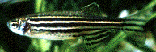

| Catch of the day...
|
 |
Construction of a high-resolution Zebrafish genetic map
Mark C. Fishman, MD
Project goal
Add markers to the existing microsatellite map to an average density of 1 marker per 0.5-0.3 cM.
Progress - August, 1999
Maps and updates are characterized by their average density and total number of markers
|
Avgerage density (# markers) |
||
|
Prior to RFA |
Reference panel characterized (102 markers) |
Knapik et al., Development 123 pp 451-460 (1996) |
|
3.4 cM map (705 markers) |
Knapik et al., Nature Genetics 38 pp 338-343 (1998) |
|
|
1.2 cM map (2000 markers) |
Shimoda et al., Genomics 58 pp 19-32 (1999) |
|
|
Updates |
||
|
Febuary 1999 |
Funding awarded (RFA DK-98-006). |
|
|
May 1999 |
1.1 cM map (2200 markers) |
First quarterly update:
Re-designed MGH web site to provide up-to-date, user-friendly access to map data. |
|
August 1999 |
0.9 cM map (2490 markers) |
Second quarterly update:
|
|
Projections |
||
|
November 1999 |
|
|
|
Subsequent quarters |
|
Certain aspects of the project, particularly screening genomic libraries, are most efficient when performed by the entire team. During quarters when this work is underway, the number of markers placed on the map may be reduced.
Data release and availability
STS data (genomic sequence and PCR primers) will be submitted to the dbSTS database at NCBI within 48 hours of analysis. All STS's will be submitted prior to and regardless of genotyping and mapping.
New updates of the map are calculated and released quarterly. All markers genotyped during that quarter will be included in the update. Calculating positions is a time-consuming process regardless of the number of markers being added, so it is not practical to calculate or release this data more frequently. Map locations for new markers will be added to the existing map displayed on our local web site and submitted to ZFIN once the positions have been reviewed for possible errors, typically within 48-72h of analysis.
We have substantially enhanced our local resources for displaying map data. We have set up a central database system to consolidate data on all aspects of marker generation including sequencing, PCR primer design, genotyping and mapping. Our web site queries this database to generate up-to-date information for every request to ensure that the community has access to the latest data. In addition, map positions are submitted to ZFIN and genomic sequences to NCBI.
Contact information:
|
CVRC Zebrafish web server |
|
|
Contact address for mapping team |
|
|
Mark Fishman |
|
|
Donald Jackson |
|
|
John Ziniti |
|
|
Lab telephone |
(617) 726-6902 |